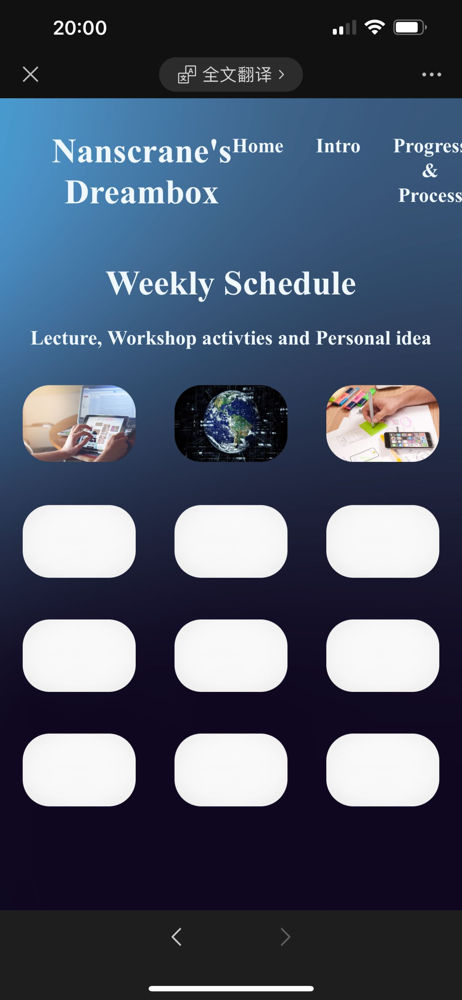

Week3 activity 1：fluid design with@ Media quries
First try of fluid media
Change all px values to percentages to ensure page layout.
Week3 activity 1：fluid design with@ Media quries

Sketch of website on mobile phone

Use @ Media quries to create website layout
I'm trying to use media quries to make the web page fit perfectly in all browsers. This is the first time I try to use this code, I split the page into a header at the top and a footer at the bottom. The body section in the middle gives me three columns. Although there are a lot of restrictions on the elements in the columns, this ensures that the layout can be maintained in any browser. (I tested it on several different devices.)